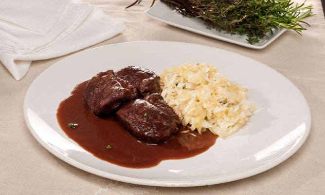
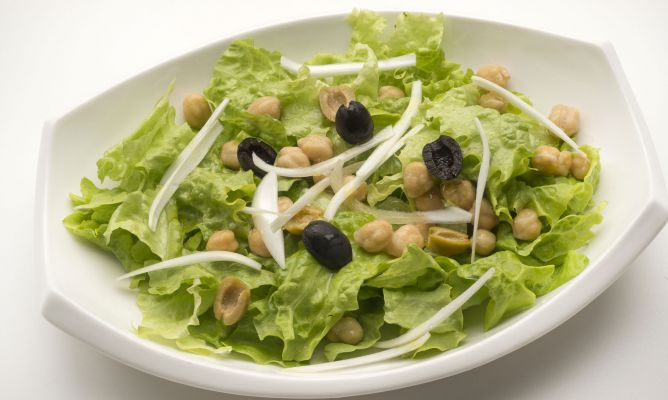
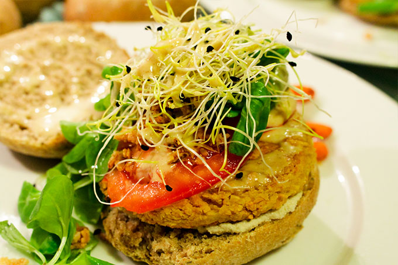
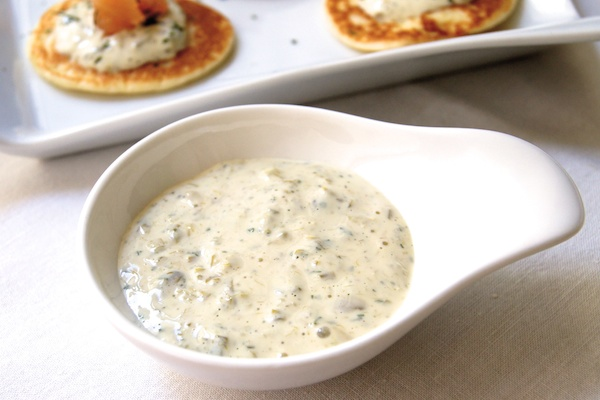
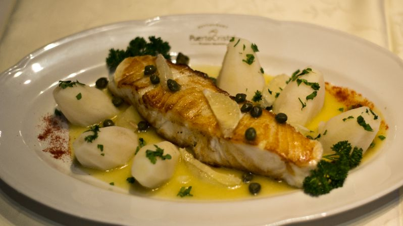

Deleitese con cualquiera de estas recetas, no se olvide del ingrediente Promartie para hacerlas especiales
Carrilleras de Cerdo con Chucrut

Ingredientes
- 8 Carrilleras de cerdo
- 2 Cebollas
- 1 Puerro
- 1 Copa de Vino Tinto
- Sal
- Pimienta
- 2 Hojas de Laurel
- Vinagreta
- 1 Zanahoria
- Aceite de Oliva
- 15 Clavos(Especia)
- 1 pizca de comino
- 50 Gr de Chocolate
- 1 Copa de Vino de Jerez
- 1 Rama de Tomillo
- Chucrut Latillan
Pasos a Seguir
- Sazona las carrilleras y dóralas en la olla con un chorro de aceite.
- Pela y pica la zanahoria, el puerro y las cebollas.
- Retira las carrilleras de la olla y ahí mismo agrega una rama de tomillo, una hoja de laurel y las verduras picadas.
- Sofríe todo e incorpora de nuevo las carrilleras, adereza con unos granos de pimienta y clavo.
- Añade el chocolate troceado y riega con los dos vinos y sazona.
- Vierte un poco de agua, cierra la olla y cocínalo durante 25 minutos desde que empieza a salir el vapor.
- Retira las carrilleras a otra cazuela, cuela la salsa e incorpórala a las carrilleras.
- Pon de nuevo al fuego durante 10 minutos para que la salsa se caramelice.
- Sirve las carrilleras y chucrut y salsea a tu gusto.
Ensalada de Garbanzos y Aceitunas

Ingredientes
- 1 Lechuga
- 1 Cebolla
- Vinagre
- 150 Gr de Garbanzos Cocidos
- Aceite de Oliva Extra Virgen
- Sal
- 8 Aceitunas Verdes Descarozadas Latillan
- 8 Aceitunas Negras Descarozadas Latillan
Pasos a Seguir
- Lava la lechuga, seca, trocea y ponla en una fuente grande.
- Pica la cebolleta en juliana y agrégala.
- Agrega también los garbanzos y las aceitunas (cortadas por la mitad).
- Adereza con aceite, vinagre y sal. Sirve la ensalada de garbanzos y aceitunas.
Salteado de Corazones de Alcaucil
Ingredientes
- 1 Cebolla
- 1/2 de Ajies Latillan
- 1/2 Limón
- 1/2 Cda. de Hojas de Menta
- Aceite de oliva para saltear
- Sal
- Pimienta
- Corazones de Alcaucil Latillan
Pasos a Seguir
- Rehogá la cebolla cortada en pluma.
- Cuando esté blanda espolvoreala con azúcar, sal y pimienta y cocinala 10 minutos más para caramelizarla.
- Aparte, salteá el ají cortado en cubitos.
- Incorporá los corazones de alcaucil cortados en cuartos y seguí cocinando un par de minutos más.
- Retirá del fuego, rociá con el jugo de limón, salpimentá y mezclá con la cebolla.
- Espolvoreá con menta picada antes de servir.
Hamburguesas de Lupines y Tempeh

Ingredientes
- 100 Gr de Tempeh Ahumado
- 1 Diente de Ajo
- 1 Ramita de Perejil Fresco
- 1 Cda. de Harina de Arroz o de Garbanzos
- 2 Tazas de Lupines Latillan
- Sal
- Pimienta
- Aceite de Oliva
Pasos a Seguir
- Procesar los lupines junto con el tempeh hasta formar una pasta.
- Picar el ajo y el perejil.
- En un bol, colocar la pasta, condimentar con el ajo, perejil, sal y pimienta.
- Agregar la harina y amasar, si hace falta, agregar unas gotas de agua para unir la mezcla.
- Dividir en bolas y aplastar dando forma de hamburguesa.
- Cocinar al horno o a la plancha, con un hilo de aceite de oliva
- O se pueden freezar, tanto crudas, como cocidas.
Salsa Tartara

Ingredientes
- 200 Gr de Mayonesa
- 50 Gr de Pepinillos en Vinagre Latillan
- 50 Gr de Alcaparras Latillan
- 25 Gr de Cebolla
- 1 Cucharada de Mostaza a la Antigua.
- 1 Cucharada de Perejil Picado.
- 1/2 Taza de Jugo de Limon.
Pasos a Seguir
- Escurre las alcaparras y los pepinillos en vinagre y pícalos
- Pica también la cebolla e incorpóralo todo al vaso de la batidora.
- Añade la mitad de la mayonesa, la mostaza, el perejil y el jugo de limón.
- Tritura con la batidora y deja la salsa a tu gusto, dependiendo de si la prefieres menos grumosa, de textura suave y homogénea, o si te gusta sentir los trocitos de cada ingrediente, en cuyo caso deberás triturar poco la mezcla.
- Saca la batidora del vaso, añade la mitad restante de la mayonesa y mézclalo todo junto con una cucharilla.
Ensalada de Merluza Negra y Vegetales(Caponata di Pesce)

Ingredientes
- 20 Galletas Marineras con Sal
- 100 Gr de Aceitunas Verdes Latillan
- 100 Gr de Aceitunas Negras Latillan
- 1 Cdita. de Azucar
- 4 Huevos duros
- 3 Zanahorias
- 150cc de Vinagre
- 1Kg de Merluza Negra
- 2 Plantas de Lechuga Mantecosa
- Aceite de Oliva
- Hojas de Perejil
- 1 Escarola
- 80 Gr de Pepinillos en Vinagre Latillan
- 200 Gr de Vieiras
- 50 Gr de Alcaparras Latillan
- 1 Copa de Vino Blanco
- 10 Filetes de Anchoas en Aceite Finisterre
- 1 Limon
- 4 Ajies en Vinagre Latillan
Pasos a Seguir
- Coloque las galletas marineras en una fuente y remójelas con el vino blanco dulce, vinagre, unas cucharadas de aceite de oliva y sal, mezcle con las manos, espolvoree con azúcar y las alcaparras, mezcle nuevamente, deje reposar solo unos minutos. Cuando comiencen a ablandarse rómpalas por la mitad con las manos.
- Cocine la merluza negra al vapor.
- Blanquee las vieiras en abundante agua hirviendo con sal.
- Corte los ajíes en vinagre en trozos.
- Corte en rodajas al bies las zanahorias previamente blanqueadas
- Corte los pepinillos en tiras.
- Corte el limón en rodajas y las rodajas en cuartos.
- Corte los huevos duros en cuartos.
- Lave bien las hojas de lechuga y escarola, luego escúrralas y séquelas.
Omelette de Pimientos
Ingredientes
- 8 Huevos
- 3 Jitomates
- 2 Morrones al Natural Latillan
- 2 Cebollas
- 1 Diente de Ajo
- Tocino
- Tomillo y Laurel
- Aceite de Oliva
- Sal
- Pimienta
Pasos a Seguir
- Calentar en una cazuela una cucharada de aceite y freír el tocino cortado en pedacitos.
- Añadir las cebollas picadas y el diente de ajo picadito.
- Cuando empiecen a dorar, añadir también los jitomates y los pimientos. Añadir el tomillo y laurel, y condimentar con sal y pimienta.
- Batir los huevos y verter la mezcla sobre los pimientos. Dejar cocinar unos minutos.
Pizza con Base de Coliflor
Ingredientes
- 170 g de Coliflor Latillan
- 1 huevo
- 15 g de Lino Molido o Almendra Molida
- Pimienta negra molida
- Sal
- Ajo Granulado
- Queso Parmesano al gusto
Pasos a Seguir
- Precalentar el horno a 180ºC y preparar una bandeja con papel sulfurizado, una lámina de silicona o algo similar.
- Cortar los ramilletes de la coliflor hasta sacar unos 170-180 g.
- Lavar y escurrir bien.
- Triturar la coliflor con una picadora o procesador de alimentos, o usar un rallador de queso fino, hasta dejar textura granulada fina, estilo cuscús.
- Disponer en un recipiente, añadir el huevo, las semillas de lino o almendra molida, la sal, hierbas al gusto, ajo granulado, queso y salpimentar.
- Mezclar todo muy bien hasta tener una masa homogénea, húmeda pero maleable.
- Extender en la bandeja con ayuda de una espátula o una cuchara grande, dando forma redondeada o rectangular, dejándola lo más fina posible.
- Hornear unos 20 minutos o hasta que se dore y esté seca al tacto. Esperar un poco a que se enfríe ligeramente y extender los ingredientes que se quieran.